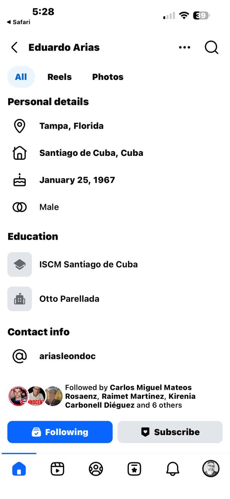

Dr. Eduardo Arias León aparece públicamente vinculado al Partido Nacionalista Cubano (PNC) y se presenta en redes sociales como candidato dentro de ese espacio político. La base confirmada por ahora es una auto-presentación pública y la asociación visible con identidad partidista nacionalista.
Las señales públicas disponibles lo ubican en un entorno político que enfatiza nacionalismo martiano, democracia, soberanía, anti-anexionismo, propiedad privada, libre mercado con economía mixta y una retórica anticomunista e independentista. Ese marco sirve como contexto partidista asociado, no como plataforma personal ya verificada punto por punto.
Hasta este momento no se ha localizado aquí una plataforma detallada firmada por el candidato con propuestas sectoriales completas. Por eso esta ficha debe leerse como un registro provisional, abierto a corrección y ampliación oficial.

Fuentes base de esta ficha: capturas de perfil público, identidad visual del Partido Nacionalista Cubano y revisión de información pública del sitio nacionalistacubano.com sobre el ideario del partido. No confundir automáticamente este partido con el Partido Nacionalista Democrático de Cuba (PNDC), que es una entidad distinta.